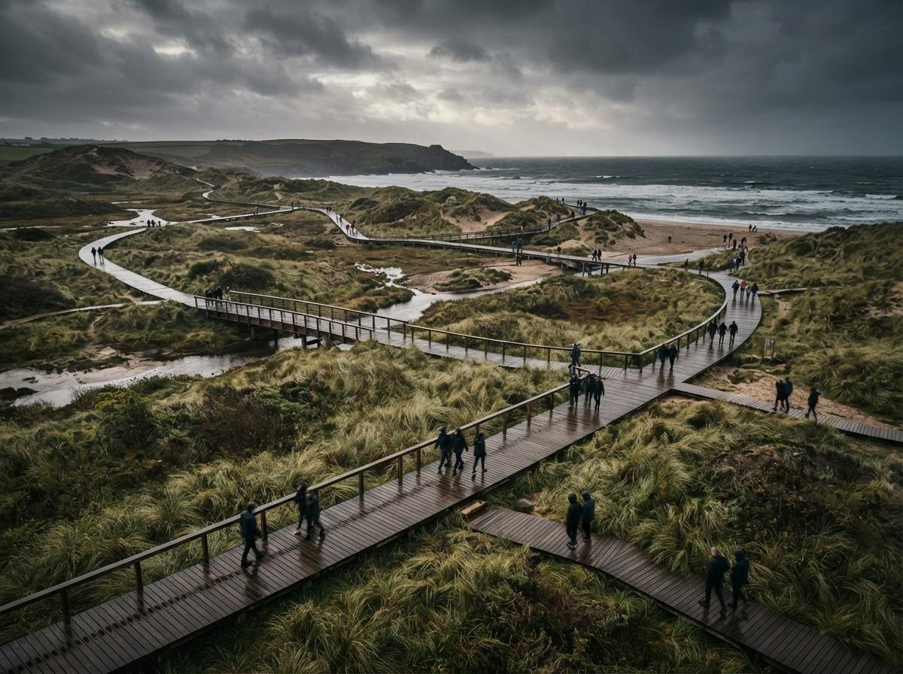

Almost every AI rendering tool architects use was trained, fine-tuned and demoed on buildings. Facades, interiors, the occasional streetscape. The marketing reel is a glass tower at dusk, not a planted courtyard, and that bias runs deeper than the demos. The models learned what a convincing image looks like from millions of photographs where the ground is a flat plane and the greenery is set dressing. Hand that same model the work of a landscape architect, where the ground is the project and the planting is the brief, and the cracks show fast.
This is not a small niche complaint. Threads on the landscape architecture forums keep landing on the same frustration: the tools that wow building architects produce renders that a landscape office cannot put in front of a client without an apology. The problem is real, but it is specific, and once you name the three places these tools fail you can build a workflow that uses AI for what it is good at and keeps it away from the decisions it gets wrong.
Three things the model gets wrong
Start with the failures, because pretending they are not there is how a studio ships a render that contradicts its own construction set.
It invents the planting. An AI image tool does not read a planting schedule. It has no concept of Quercus palustris versus a generic round tree, no sense that you specified a multi-stem birch and got back a single-trunk oak. It generates plausible foliage, which is exactly the problem, because plausible is not specified. For a concept board that is fine. For a render that a contractor or a planning officer reads as a commitment, an invented species list is a liability, not a flourish.
It flattens the ground. Grading is the heart of landscape work and the thing image models understand least. Feed a free-form generator a sloped site and it will often hand back a level lawn, soften the steps into a ramp it imagined, and delete the retaining wall because nothing in its training said the wall had to be there. The model treats slope as a texture, a bit of shading, rather than as geometry with rules. A render that gets the levels wrong is worse than no render, because someone downstream will trust it.
It cannot hold a season or a year. Landscape is the one discipline where time is part of the drawing. You design for the canopy at fifteen years, the perennials in their second summer, the deciduous edge in winter when the screening drops away. AI tools default to a single peak-summer fantasy, every tree mature, every bed in flower, every day cloudless. That single happy season oversells the scheme and hides the months a client actually needs to understand.
The building tools render a moment. Landscape design is the argument that the moment changes.
Where AI actually earns its place
None of that means landscape architects should sit the tools out. It means using them as a finishing layer over geometry you control, not as the source of truth. The reliable pattern in 2026 looks like this: build the scene in a tool that treats plants as placed assets, then let AI do the light, the atmosphere and the polish.
Lumion and D5 Render remain the workhorses here for a reason that has nothing to do with hype. Both ship large, curated vegetation libraries where a tree is an object you choose and place, not a phrase the model interprets. You get species you can name, growth states you can set, and seasonal variants you can switch. Their AI features sit on top of that, enhancing materials and sky and reflections, while the planting stays exactly where you put it. That division of labour, accurate assets underneath, AI enhancement on top, is the one that survives contact with a real client. We covered the broader version of this split in our enhancer versus pipeline breakdown.
Veras, driven from SketchUp or Rhino, is the option for offices that model their own context. Because it uses your geometry as the substrate and renders from it rather than from a text prompt, the massing, the levels and the hard landscape hold. You will still want to place key trees as real geometry rather than trusting the generation to invent them, but the bones of the site stay true. The same logic that makes geometry-anchored rendering trustworthy for buildings applies doubly to sites, where the geometry is the design.
ComfyUI and Stable Diffusion are the right tool for one specific job: detailing foliage and ground texture on a view that is already correct. If you have a render with the right levels and the right tree positions but the planting reads flat or plasticky, a controlled diffusion pass can add depth, dappled light and the kind of textural richness that a real-time engine struggles with. Used that way, on a locked composition, it enhances. Used as the generator, it hallucinates. The difference is whether you hand it a finished frame or a blank prompt, and you can read the full version of that argument in our notes on catching geometry hallucination before it ships.
| Job | Trust the AI? | What to do instead |
|---|---|---|
| Species-accurate planting | No | Place real assets in Lumion or D5, label them |
| Site grading and levels | No | Render from surveyed geometry, never from a flat prompt |
| Masterplan layout | No | Keep it a measured drawing from CAD or GIS |
| Eye-level atmosphere and light | Yes | AI enhancement over a correct base render |
| Foliage texture and depth | Yes, on a locked view | ComfyUI pass on a finished composition |
| Mood and concept boards | Yes | Free-form generation, labelled as concept |

The masterplan trap
The most expensive mistake is asking AI to render a masterplan. A masterplan is a measured document: areas, circulation, drainage zones, phasing. A generative model will happily redraw it, prettier and wrong, moving a path it did not understand and merging two zones it could not tell apart. Keep the plan as a drawing that comes from your CAD or GIS base, where every line means something, and aim the AI at the places it helps. Turn the entry plaza into a photoreal eye-level image. Render the waterfront edge at the hour that sells the scheme. Let the masterplan stay a plan and let the hero views become renders. That separation keeps the accuracy where accuracy is contractual and the atmosphere where atmosphere is persuasive.
There is a quieter benefit to working this way. When the plan is a drawing and the renders are clearly renders, nobody confuses the two. The client reads the masterplan as the binding layout and the perspectives as the feeling, which is exactly how a landscape proposal is supposed to land. The trouble starts only when a single AI image tries to be both at once, and ends up trusted as neither.
Our take: borrow the building tools, refuse their defaults
Landscape architects are not badly served by AI rendering. They are served by tools that were tuned for a different problem and then handed over without a manual. The fix is not to wait for a planting-aware model that may never arrive at scale; it is to invert the trust. Let the AI touch light, mood, weather and texture, the things it is genuinely good at, and never let it decide what is planted, how the ground falls, or where a path goes. Those belong to the survey, the schedule and the plan, the documents that carry your name when the thing gets built.
Do that, and the same tools the building architects rave about become quietly useful to you, not because they finally understood landscape, but because you stopped asking them to. The render is for the feeling. The drawing is still the design.
Based on this week's intel sweep of 2026 AI rendering coverage for architects, including landscape architecture community discussion of tool accuracy, current vegetation-library and AI-enhancement features in real-time renderers, and Vista Studios hands-on use of geometry-anchored render workflows. Tool features change; verify a renderer's current planting and terrain handling before standardising on it. No affiliate relationship with any tool named.